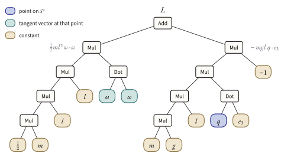
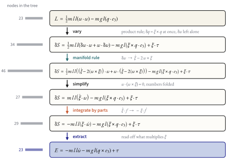
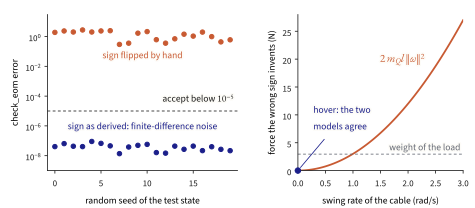
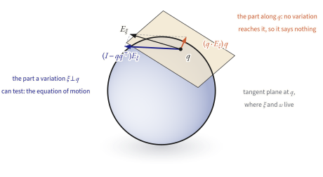
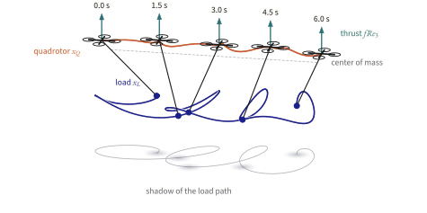

Symbolic derivation
Here are the equations of motion of a quadrotor carrying a load on a cable. They are copied from a PhD thesis on aerial transportation (Wu, 2017), where every controller is designed on them.
The load is at . The unit vector points from the quadrotor down the cable to the load, with . The quadrotor has attitude , thrust and torque . Now one question. Look at the term in the first line. It is printed with a minus sign. Should it be a plus?
Try to decide before reading on. Staring does not help. You could re-derive the equations, as Chapter 4 does over several pages. Or you could fly. In hover the cable hangs still, , and the term is zero. A model with the wrong sign matches every hover log you will ever record. The error only appears when the load swings. For a 1.5 kg quadrotor on a 1 m cable swinging at 2 rad/s, the wrong sign invents a force of 12 N along the cable. The load weighs 2.9 N.
So one sign can pass every bench test and fail in the first aggressive manoeuvre. This chapter offers a third option. Let a program do the derivation, since a program does not drop signs. Then test its answer with a check that shares none of its reasoning.
5.1 Seventeen lines
The program is geomech, a Python library. You give it a Lagrangian and the virtual work of the inputs. It returns the equations of motion. Here is the whole quadrotor with its load.
from geomech import *
half = Scalar("0.5", value=0.5, attr=["Constant"])
mQ, mL, g, l = getScalars("m_Q m_L g l", attr=["Constant"])
J = Matrix("J", attr=["Constant", "SymmetricMatrix"])
e3 = Vector("e3", attr=["Constant"])
xL, q, R = Vector("x_L"), S2("q"), SO3("R") # load, cable direction, attitude
f, tau = Scalar("f"), Vector("\\tau") # thrust, torque
omega, xi = q.get_tangent_vector(), q.get_variation_vector()
Omega, eta = R.get_tangent_vector(), R.get_variation_vector()
xQ = xL - q * l # quadrotor: one cable length up
vQ, vL = xQ.t_diff(), xL.t_diff()
L = (half * mQ * Dot(vQ, vQ) + half * mL * Dot(vL, vL)
+ half * Dot(Omega, J * Omega) - mQ * g * Dot(e3, xQ) - mL * g * Dot(e3, xL))
dW = Dot(xL.delta() - Cross(xi, q) * l, (R * e3) * f) + Dot(eta, tau)
variables, inputs = SystemVariables(vectors=[xL, q], matrices=[R]), [f, tau]
eom = compute_eom(L, dW, variables)
err = check_eom(L, dW, variables, eom, inputs=inputs)Read it like the first page of a derivation. Constants are flagged so that their variations vanish. The three configuration variables are declared by the manifold they live on: a position in , a direction on , an attitude on . The library hands back the matching velocities and variations: omega is the of , xi is the of , and Omega, eta are the and of and . The Lagrangian is kinetic minus potential energy. The virtual work says the thrust acts at the quadrotor, whose virtual displacement is , and the torque pairs with .
The derivation and the check together run in well under a second. The result is one equation per variation. Two of them, in our notation:
There is the disputed term, with a minus sign. (Since , .) The third equation, for the cable, has seven terms and waits in Section 5.4. The last line sets err to . That number will matter more than the equations.
Two things should bother you. Why believe a program over a thesis? And what did the program actually do?
5.2 Why not ask a computer algebra system?
Take the second question first. Computer algebra systems have differentiated Lagrangians for decades. Why a separate tool?
A general system differentiates functions of real variables. Ask it for and it wants to know what is a function of. You can answer with three angles, and you are back in Chapter 1 with a singularity. You can answer with nine matrix entries and six constraints, and you now carry Lagrange multipliers for constraints the geometry already knows. Either way you have left the manifold to please the software.
Now look again at the recipe of Chapter 4. It never differentiates with respect to . It does four things. Apply with the product rule. Replace the variation of each manifold quantity with a known expression. Integrate by parts. Read off what multiplies each variation. None of these steps needs coordinates. Each one replaces a pattern of symbols with another pattern.
So the right object is not a function of numbers. It is a tree (Figure 5.1). Interior nodes are operations: Add, Mul, Dot, Cross. Leaves are symbols, and every leaf carries a type that says where it lives.

Mul nodes. The colour of a leaf is its type. That type is all the program knows about , and it is enough.The type is what lets a rewrite rule do geometry. The program does not know what a pendulum is. It knows that the variation of a leaf of type “point on ” is , that the variation of a leaf flagged constant is zero, and so on down Table 5.1.
| Declared as | Lives on | Velocity | Variation | Variation of the velocity |
|---|---|---|---|---|
Scalar("s") |
||||
Vector("x") |
||||
S1("q", axis=e) |
circle about | |||
S2("q") |
||||
SO3("R") |
The five leaf types and the rules attached to them. The last column is the content of Chapter 3, stored as data.
Nodes cannot be modified once built. A rewrite never edits a tree. It builds a new one. So every intermediate stage of a derivation still exists afterwards, and you can ask to see it.
5.3 One pendulum, every stage
The quadrotor is too big to watch. Take the smallest system that has a curved configuration space: a mass on a rigid rod of length , pivoting freely about the origin. The rod direction is . A torque acts at the pivot.
m, g, l = getScalars("m g l", attr=["Constant"])
e3 = Vector("e3", attr=["Constant"])
q, tau = S2("q"), Vector("\\tau") # rod direction, torque at the pivot
omega, xi = q.get_tangent_vector(), q.get_variation_vector()
L = half * m * l * l * Dot(omega, omega) - m * g * l * Dot(q, e3)
dW = Dot(xi, tau)
variables = SystemVariables(vectors=[q])
trace = EOMTrace()
eom = compute_eom(L, dW, variables, trace=trace)The trace argument asks the pipeline to keep every stage. It records thirteen. Figure 5.2 shows the five that change the expression, exactly as the library prints them. Follow them with a pencil.

Vary. The product rule runs down the tree. The kinetic term gives , kept as two terms because nothing has yet said the dot product is symmetric. The point is replaced on the spot by . The variation of the velocity, , is left as an unevaluated symbol.
Apply the manifold rule. Every becomes , the row of Table 5.1. The tree is now at its largest, 46 nodes. On paper you would write the same line. This is also where hand derivations go wrong: a flipped cross product, a forgotten factor of 2.
Simplify. Small identities are applied until nothing changes. One of them is that a vector is perpendicular to its own cross products, . It deletes the term that was just introduced. For this Lagrangian the factor of 2 was never going to matter, and the program found that out by trying. Then the two halves merge and the is absorbed. On paper you would have jumped here “by inspection”. The program cannot inspect. Over the whole derivation it logged 44 rule applications, each with a name. Two of them:
vector.dot_cross_orthogonal: <cross(v:\omega_{q}, v:\xi_{q}), v:\omega_{q}> ==> 0
ibp.dot: <d/dt(v:\xi_{q}), v:\omega_{q}> ==> <-v:\xi_{q}, d/dt(v:\omega_{q})>Integrate by parts. The term becomes . The boundary term is dropped, because variations vanish at the end times. For a larger system this stage first has to rearrange each term until stands alone on one side of a dot product. It uses and to get there.
Extract. Every term is now dotted with something. The gravity term needs one last turn of the triple product, . Collect what multiplies :
Sanity check: hang the rod straight down, , and . No torque, no acceleration.
Thought experiment 5.1 (The clerk who knows no mechanics). Hand the five boxes of Figure 5.2 to a careful clerk who has never seen a pendulum. Give them one card with the rules: the product rule, the row of Table 5.1, , the triple product, and “move the dot from to its partner and flip the sign”. Ask them to check that each box follows from the one above.
They can. Nothing on the card mentions energy, force or a sphere. That is what it means for the derivation to be mechanical, and it is why a machine can do it. It is also a warning. The clerk will apply a wrong card just as carefully as a right one.
Notice the form of (5.3). Everything is on one side and the inertia term is negative, because is literally the coefficient of in . The library does not rearrange.
The clerk’s warning is the open problem. Exact is not the same as right. A rule in the library could be wrong. Or the equation you are holding came from somewhere else. What would convince a sceptic?
5.4 Trust, but verify
A sceptic wants a second derivation that shares nothing with the first. There is one. The Euler–Lagrange equations can be evaluated numerically from alone, with no algebra at all.
That is what check_eom does. It draws a random state: a random point on each manifold, random velocities, random accelerations, random inputs, random values for every constant. It evaluates the number at nearby states and forms by central differences, in the constrained forms that hold on and . It adds the forcing read from . Then it evaluates the symbolic at the same state and compares. No product rule, no manifold rule, no integration by parts. The only thing the two computations share is . The function returns the worst relative error over five random states.
For the quadrotor it returned . That is the noise floor of a finite difference. Now run the experiment from the opening. Type in the load equation as if from a page of algebra, once with each sign.
aL, domega = xL.t_diff().t_diff(), omega.t_diff()
def load_equation(sign): # the x_L row, typed in from a page of algebra
return ((aL + e3 * g) * (mQ + mL) * (-1) + Cross(domega, q) * (mQ * l)
+ q * (Dot(omega, omega) * mQ * l) * sign + (R * e3) * f)
for sign in (-1, +1):
hand = dict(eom)
hand[str(xL.delta())] = (xL.delta(), load_equation(sign))
print(sign, check_eom(L, dW, variables, hand, inputs=inputs))-1 4.059809332153562e-08
1 1.9027858460945652Seven orders of magnitude apart (Figure 5.3, left). The companion function assert_eom says which equation is at fault: equation for '\delta{x_L}' disagrees with the Euler-Lagrange residual: relative error 1.903e+00 >= 1.0e-05.

Example 5.1 (Why the random state matters). With kg and m, the two versions of the load equation differ by . At that is nothing. At 2 rad/s it is 12 N, or 6.7 m/s² of load acceleration, against a load weight of 2.9 N. A test at hover checks the equation at the one state where the wrong term is silent. The check draws at random, so every term is exercised at once. Over 20 seeds the wrong equation scored between 0.30 and 2.8. The right one never exceeded .
Now the cable equation, which we skipped. The program returns
The first line has a counterpart in the thesis. The bracket has none. Three terms in the load’s velocity, which (5.1) never mentions. Is the program wrong, or the thesis?
Thought experiment 5.2 (Pushing along the rod). Hold a pendulum by its pivot and push the bob straight along the rod, toward the pivot. Nothing happens. The rod takes the push. Only the part of a force that lies across the rod can move the bob.
The equations inherit this. A variation is always perpendicular to , so only ever tests the part of that lies in the tangent plane. Whatever has along is multiplied by zero in . It is not an equation. It is not anything.

Apply the Jacobi identity to the bracket in (5.4) and it collapses to . It points along (Figure 5.4). It is the push along the rod. The simplifier has no Jacobi rule, so the three terms survive, and they are harmless. The check compares tangent parts only. Add any multiple of to the cable equation and it still passes, as it should.
Pitfall (Two conventions that will bite). Signs. Every equation is with . A point mass gives . If you copy an equation into a paper, move the inertia across yourself.
Tangent plane. For a variable on the equation is , together with . Never solve as three equations in three unknowns. The answer will have and the trajectory will leave the sphere.
Some mistakes never reach the check. The library refuses, with a message that names the culprit. Two you will meet in your first week:
ValueError: compute_eom: δS still contains the variation symbols '\delta{e3}' of the
symbols 'e3', which are neither entries of SystemVariables nor declared in params; ...
TypeError: compute_eom: SystemVariables.vectors entry '\omega_{q}' is a tangent or
variation vector, not a configuration variable; list the manifold point 'q' insteadThe first means you forgot attr=["Constant"] on , so the program varied it. The second means you listed a velocity where a configuration was wanted. A forgotten flag does not always raise an error. Leave "SymmetricMatrix" off the inertia and you get a correct equation with throughout. The program will not assume what you did not declare.
The check has two blind spots. It measures error relative to the size of the whole equation, so a wrong term that is tiny next to its neighbours can hide. Leave parameters symbolic and they are drawn of order one, which avoids this. And it compares the equation with the Lagrangian, not the Lagrangian with the robot. Type the wrong kinetic energy and you get the right equations for the wrong machine, verified to eight digits.
Verified equations are still only symbols. To see whether they describe a quadrotor, they have to move.
5.5 From equations to motion
An integrator needs accelerations. Each is linear in them and in the inputs, so it splits as
with and . The function to_standard_form performs the split symbolically. Because of the sign convention, is minus the physical inertia: the load row has , the attitude row has . The cable row has , which has rank two. That is the tangent plane again, showing up as a singular block.
from geomech.codegen import StateLayout, collect_params, load_module, module_source
from geomech.simulation import simulate
sf = to_standard_form(eom, variables, inputs)
layout = StateLayout(variables, inputs, collect_params([L, dW], variables, inputs))
plant = load_module(module_source(sf, layout, lagrangian=L), "quadrotor_load")
p = {"m_Q": 1.5, "m_L": 0.3, "l": 1.0, "g": 9.81,
"J": np.diag([0.02, 0.025, 0.04]), "e3": np.array([0.0, 0.0, 1.0])}
q0 = np.array([np.sin(0.8), 0.0, -np.cos(0.8)]) # cable swung out by 0.8 rad
w0 = np.cross(q0, np.cross([0.0, 0.0, 1.6], q0)) # circling about the vertical
v_cm = np.array([0.45, 0.0, 0.0]) # centre-of-mass velocity
v0 = v_cm + p["m_Q"] * p["l"] / (p["m_Q"] + p["m_L"]) * np.cross(w0, q0)
x0 = layout.pack(x_L=np.zeros(3), q=q0, R=np.eye(3), omega_q=w0, x_L_dot=v0)
hover = np.r_[(p["m_Q"] + p["m_L"]) * p["g"], 0.0, 0.0, 0.0] # u = [f, tau]
traj = simulate(plant, x0, 6.0, p, u=hover)
free = simulate(plant, x0, 6.0, p) # no inputs: energy is conserved
E = free.energy()
print(np.max(np.abs(E - E[0])) / abs(E[0]), free.max_drift())module_source writes (5.5) out as a plain NumPy module, 311 lines for this system, with functions for , , , the kinematics and the energy. It no longer needs the symbolic library. simulate integrates it with a fourth-order Runge–Kutta–Munthe-Kaas scheme. The idea is a familiar one: do not add increments to and . Each step moves by a rotation and by a matrix exponential, so the state cannot leave the manifold. The rows are projected as the pitfall above demands.
The run in the listing holds the thrust at the total weight, with zero torque. The cable starts 0.8 rad from vertical and circling, and the centre of mass coasts at 0.45 m/s (Figure 5.5).

A trajectory figure proves little. Conserved quantities prove more.
Example 5.2 (Four checks on one simulation). Constraints. Over 6000 steps, , and stay below .
Energy. With no inputs the system falls freely and energy must be constant. The relative drift is . Coarser steps of 0.04, 0.02 and 0.01 s give , and : a factor of 16 per halving, the signature of a fourth-order method.
Work. With thrust on, energy is not conserved. It varies over a range of 0.75 J. But a constant vertical force has a potential, so should be constant. It is, to J.
Momentum. The centre of mass stays on its straight line to m. The quadrotor circles it at 0.167 m, the load at 0.833 m. The ratio is .
Now settle the opening question. Equation (5.1) is solved for the accelerations. The program’s rows (5.2) and (5.4) are coupled. Substitute one into the other and two lines of algebra give the thesis form. Numerically, the accelerations from the generated code and from (5.1) agree to at 50 random states. The thesis is right. The sign is a minus.
A controller needs one more thing: the dynamics linearized about a trajectory. That is one more variation. Apply to itself, with the same rules, and collect terms. The function linearize does this and returns in the variation coordinates . [ch-linearization] develops it.
5.6 More bodies
Nothing in the pipeline cared that the quadrotor lives on a product, . We listed three variables and got three equations. Larger products cost typing and little else. The second model of Wu’s thesis has several quadrotors carrying one rigid body by cables. It is among the 30 systems in the library’s catalogue. With three quadrotors it has 21 degrees of freedom and eight coupled equations. They derive in a fraction of a second and check at .
A harder request: a chain of spherical pendulums, where is a symbol. There are equations and you cannot type them. The geomech.indexed module lets you write the Lagrangian with sums.
from geomech.indexed import (Family, IndexedVariables, Sum, compute_indexed_eom,
indices, n)
i, j = indices("i j")
g, e3 = Scalar("g", attr=["Constant"]), Vector("e3", attr=["Constant"])
q = Family(S2, "q") # q_1, ..., q_n
m = Family(Scalar, "m", attr=["Constant"])
l = Family(Scalar, "l", attr=["Constant"])
def x(k): # position of mass k
return Sum(j, 1, k, q[j] * l[j])
v = x(i).t_diff()
L = Sum(i, 1, n, 0.5 * m[i] * v.dot(v)) - Sum(i, 1, n, m[i] * g * x(i).dot(e3))
chain = IndexedVariables(families=[q])
eom = compute_indexed_eom(L, None, chain)
for size in range(1, 7):
members, eq = chain.members(size), eom.instantiate(size)
print(size, check_eom(L.instantiate(size), None, members, eq))The result is a single equation for link , with sums whose limits depend on . On the tangent plane of it reads
Read aloud: the mass hanging below both link and link , times the two lengths. Nobody typed the . The Lagrangian contains , and exchanging the order of summation produces that bound. The program does the exchange. (Its raw output also carries three terms per pair that point along , the same Jacobi leftovers as before.)
The loop at the end of the listing instantiates the generic equation for to and checks each against the Lagrangian expanded for the same . The errors run from to . Figure 5.6 simulates .

How does a sum fit into a tree? It does not. A sum is kept as a list of ordinary trees whose leaves carry an index, with the inequalities between indices stored beside them. Each tree goes through the same five stages. The inequalities become the limits of the sums that remain.
5.7 What it cannot do
A tool you trust is a tool whose edges you know.
The Lagrangian must depend on configurations and velocities only. Put an acceleration in it and the library stops with “the Lagrangian depends on accelerations … higher-order Lagrangians are not supported”. (Any power of the velocity is fine. A quartic kinetic term derives and checks.)
The manifolds are , , , , and their products. exists only as with the inertial velocity . There is no way to declare a new manifold from outside.
Constraints must be built into the configuration space, as the cable is built into . Rolling constraints, closed kinematic chains and contact are out of scope. The cable here is always taut. A cable that goes slack is a different model with a different configuration space, and switching between them is your job.
The simplifier is not canonical. Two correct answers can print differently, as the bracket in (5.4) showed. Compare equations by value, with the check, never by eye.
And once more: the check certifies the equations against . It cannot certify against the world.
Exercises
Exercise 5.1. Settle the sign in (5.1) by physics alone. Cut the thrust, , so that both bodies fall freely while whirling about their centre of mass. Which way must the cable pull the load? Compare with the first line of (5.1) and with the tension the thesis gives, .
Exercise 5.2. Derive the rule from and with . Show that the second term points along . Then find a Lagrangian for which it does not drop out, derive its equations in the notebook, and locate the stage of the trace where the term survives.
Exercise 5.3. Walk the 3D pendulum, with , through the pipeline by hand, one box per stage as in Figure 5.2. Then run it with a trace and compare. You should reach . Which term comes from , and why does it not vanish here as it did on the sphere?
Exercise 5.4. Prove that the bracket in (5.4) equals . Then eliminate between (5.4) and the first row of (5.2) to recover the first line of (5.1).
Exercise 5.5. Plant your own error. In the notebook, change one sign or one factor in the cable equation and run check_eom. Find a change that the check cannot see, and explain in one sentence why it is not an error.
Exercise 5.6. Replace the rigid cable by a spring: add a scalar variable for the cable length, with elastic energy . Derive, check and simulate. How many equations are there now? Then use (5.6) to write the mass matrix of a three-link chain and compare it with to_standard_form at .
Notes and sources
The variational method that the pipeline automates, the rules of Table 5.1 and the chain of pendulums behind (5.6) are set out by Lee, Leok and McClamroch (2018). Bittner and Sreenath (2016) were the first to automate the derivation of coordinate-free equations on manifolds, with a package written in Scala. geomech (Kotaru, 2026) is a Python library in the same line. It adds the numerical check, linearization, code generation, simulation and sums over a symbolic number of bodies. The numbers in this chapter were produced with version 1.1.0.
The quadrotor with a suspended load, (5.1), and the multi-quadrotor rigid-payload model are taken from Wu (2017, ch. 3). The single-quadrotor model was first derived by Sreenath, Lee and Kumar (2013). For a sense of what the automation replaces, see the reaction mass biped of Siravuru (2019, ch. 5): thirteen degrees of freedom, with three attitudes on , leg lengths and sliding reaction masses, derived by hand from a variational principle over several pages. The integrator is due to Munthe-Kaas (1999).
- B. Bittner and K. Sreenath, “Symbolic computation of dynamics on smooth manifolds”, Workshop on the Algorithmic Foundations of Robotics (WAFR), 2016.
- P. Kotaru, geomech: symbolic equations of motion on smooth manifolds, version 1.1.0, 2026. https://github.com/vkotaru/geomech
- T. Lee, M. Leok and N. H. McClamroch, Global Formulations of Lagrangian and Hamiltonian Dynamics on Manifolds, Springer, 2018.
- H. Munthe-Kaas, “High order Runge–Kutta methods on manifolds”, Applied Numerical Mathematics 29(1), 1999.
- A. Siravuru, Geometric Control and Learning for Dynamic Legged Robots, PhD thesis, Carnegie Mellon University, 2019.
- K. Sreenath, T. Lee and V. Kumar, “Geometric control and differential flatness of a quadrotor UAV with a cable-suspended load”, IEEE Conference on Decision and Control, 2013.
- G. Wu, Safety-critical Geometric Control Design with Application to Aerial Transportation, PhD thesis, Carnegie Mellon University, 2017.